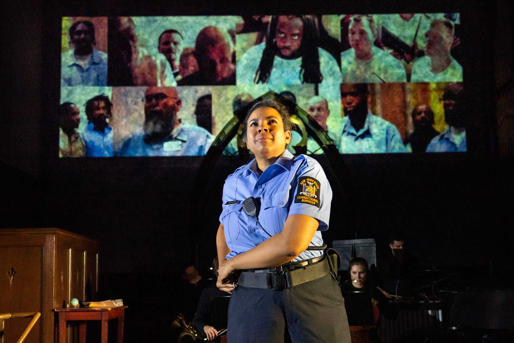

FULFILLING THE ESSENCE OF OPERA.
FALL 2019
HOT MAMA
Singing Gays Saving Gaia
October 30-31, 2019 @ Roulette, Brooklyn
Heartbeat’s beloved tradition of mixing opera, drag, and pastiche returns to Roulette. This year, we celebrate Mother Earth in all her beauty and biodiversity. What will happen when Gaia herself confronts the terrifying Monster of Climate Collapse? Meltdown or salvation? Through virtuosic renditions of arias by Wagner, Vivaldi, Bernstein, Adams, and more, this extravaganza confronts the ultimate drama of our day. Expect operatic emissions, high “C’s”, and polar baritones!
SPRING 2019
LA SUSANNA
A co-production with Opera Lafayette
April 21-22, 2019
The Kennedy Center's Terrace Theater
May 2-5, 2019
BAM Fisher (Fishman Space)
Premiere American Staging: music by Alessandro Stradella, libretto by Giovanni Battista Giardini, directed by Ethan Heard, music directed by Ryan Brown & Jacob Ashworth.
FALL 2018

FIDELIO
Remounted in a Semi-Staged Concert Version
Presented by Rutgers Presbyterian Church
Music by Ludwig van Beethoven, original libretto by Joseph Sonnleithner & Georg Friedrich Sonnleithner, adapted & directed by Ethan Heard, arranged & music directed by Daniel Schlosberg, new English dialogue co-written by Marcus Scott & Ethan Heard.
DRAGUS MAXIMUS
A Homersexual Opera Odyssey
October 26-27, 2018
Roulette, Brooklyn
All roads lead to Rome…and to Heartbeat Opera’s fifth annual Halloween Drag Extravaganza! Grab your golden fleece and catch a chariot down to Brooklyn’s Colosseum (aka Roulette) for an operatic, Greco-Roman orgy of gorgeous gladiators and glam goddesses. Join Homer and Sappho in a Herculean quest to Hades and back -- featuring the siren songs of Monteverdi, Handel, and Offenbach, plus a brand new number by Vavrek and Schlosberg.
SPRING FESTIVAL 2018
DON GIOVANNI
Spring Festival 2018
May 2–12, 2018
Baruch Performing Arts Center
Music by Wolfgang Amadeus Mozart, libretto by Lorenzo Da Ponte, adapted & directed by Louisa Proske, music directed by Jacob Ashworth, new arrangement by Daniel Schlosberg, additional direction & musical staging by Chloe Treat.
FIDELIO
Spring Festival 2018
May 3–13, 2018
Baruch Performing Arts Center
Music by Ludwig van Beethoven, original libretto by Joseph Sonnleithner & Georg Friedrich Sonnleithner, adapted & directed by Ethan Heard, arranged & music directed by Daniel Schlosberg, new English dialogue co-written by Marcus Scott & Ethan Heard.
FALL 2017
ALL THE WORLD'S A DRAG!
Drag Extravaganza 2017
October 30–31, 2017
National Sawdust
Don thy codpieces, neck ruffs, and farthingales — Shakespeare cometh! Experience Heartbeat Opera's 4th annual Drag Extravaganza: ALL THE WORLD’S A DRAG! Shakespeare in love...with opera.
SPRING FESTIVAL 2017
BUTTERFLY
Spring Festival 2017
May 21–28, 2017
Baruch Performing Arts Center
Music by Giacomo Puccini, libretto by L. Illica and G. Giacosa, new arrangement by Daniel Schlosberg, adapted by Ethan Heard and Jacob Ashworth, translation by Jacob Ashworth & Peregrine Heard.
CARMEN
Spring Festival 2017
May 21–28, 2017
Baruch Performing Arts Center
Music by Georges Bizet, libretto by Henri Meilhac and Ludovic Halévy, new arrangement by Daniel Schlosberg, adapted & directed by Louisa Proske, translation by Michaël Attias.
FALL 2016
QUEENS OF THE NIGHT: MOZART IN SPACE
Drag Extravaganza 2016
October 31, 2016
National Sawdust
Heartbeat Opera presents its 3rd annual Halloween Drag Extravaganza: a spectacular night of eye-popping fashion, divalicious coloraturas, and galactic Halloween revelries.
HEARTBEAT ON THE HIGH LINE
September 22, 2016
The High Line, NYC
Heartbeat Opera was invited to perform as part of the "Out of Line" series on the New York's iconic High Line.
SPRING FESTIVAL 2016
LUCIA DI LAMMERMOOR
Spring Festival 2016
March 10–20, 2016
Theatre at St. Clement's
Music by Gaetano Donizetti, libretto by Salvadore Cammarano, directed & adapted by Louisa Proske, arranged & music directed by Daniel Schlosberg.

DIDO & AENEAS
Spring Festival 2016
March 11–20, 2016
Theatre at St. Clement's
Music by Henry Purcell, libretto by Nahum Tate, directed by Ethan Heard, music directed by Jacob Ashworth.
FALL 2015
MISS HANDEL
Drag Extravaganza 2015
October 29–30, 2015
The Cotton Candy Machine
Part pageant, all party, this year’s delectable celebration (mis)handles George Frideric Handel. Don your powdery wigs, your dazzling masks, and prepare ye for beauty marks, coloraturas, fans, cocktails, raffle prizes, a costume contest, and so much more!
SPRING FESTIVAL 2015
DAPHNIS & CHLOÉ
Spring Festival 2015
March 19–22, 2015
Sheen Center Blackbox
Music by Jacques Offenbach, text by Franz Kafka, directed by Louisa Proske, music directed by Louis Lohraseb.
KAFKA-FRAGMENTS
Spring Festival 2015
March 18–22, 2015
Sheen Center Blackbox
Music by György Kurtág, text by Franz Kafka, directed by Ethan Heard.
FALL 2014
THE FAIRY QUEEN
Drag Extravaganza 2014
October 30, 2014
The Cotton Candy Machine
Music by Henry Purcell, directed by Ethan Heard, Louisa ProskeMusic, Jacob Ashworth & Daniel Schlosberg.